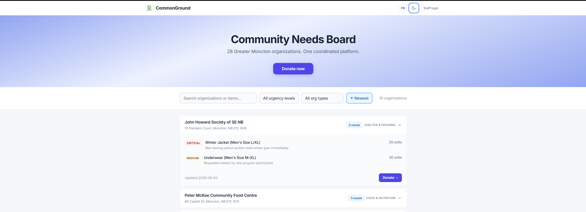
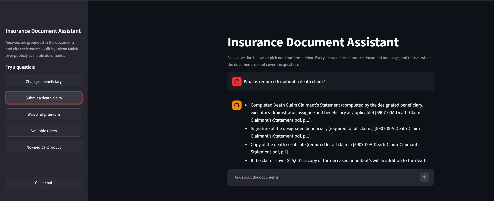
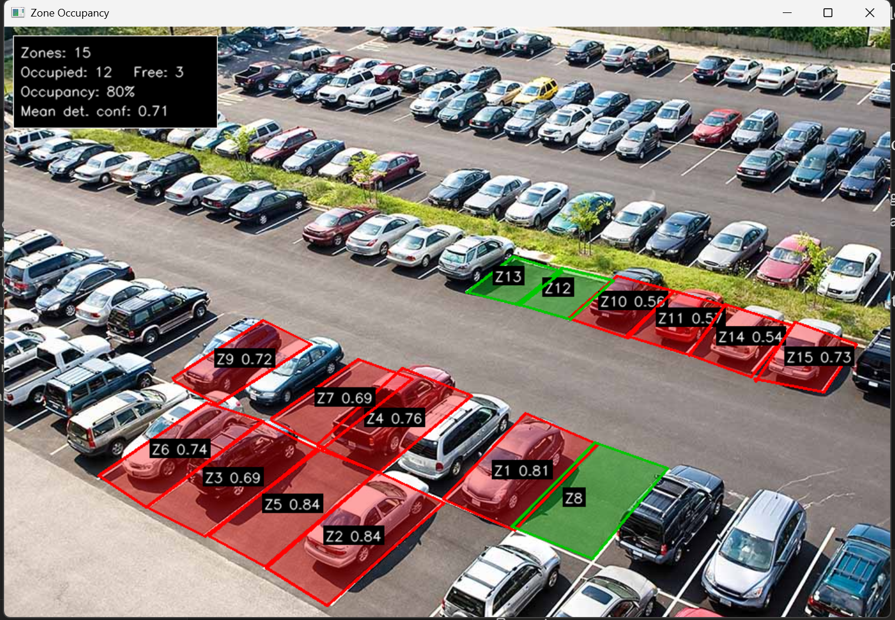
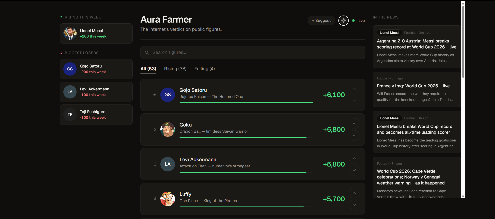

I build software that holds up in production.
I am a full stack web developer. I just shipped CommonGround, a production donation platform used by a coalition of more than 28 community organizations in Greater Moncton. My team also won first place at Hack4Change 2026, against 15 other teams in a 48 hour sprint, with the prototype that became the foundation for that project. More recently I built and deployed an AI document assistant on Azure that answers from source documents with citations and refuses when it is not sure.
Featured project
CommonGround

Community organizations in Greater Moncton were each running donations on their own, with no shared way to route a gift to the group that needed it most. CommonGround gives a coalition of more than 28 organizations one place to receive and coordinate donations, so a single contribution can reach the right partner instead of stalling in a silo.
I led the team that built the original prototype during the Hack4Change sprint, then joined the build team to turn it into something real. The platform runs on a React front end and a NestJS API backed by PostgreSQL, with the whole stack containerized in Docker so it deploys the same way every time. The work now is the unglamorous part that matters: data integrity, clear roles and permissions, and an interface that volunteers can use without training.
Featured project
Insurance Document Assistant

A retrieval-augmented assistant that answers questions about a set of insurance documents. It reads the documents, finds the passages that matter, and answers using only those, citing the exact file and page for every claim. When the documents do not cover a question, it says so rather than guessing, which is the behaviour you need before anyone can trust an answer in a regulated setting.
The pipeline runs on Azure AI Foundry and Azure AI Search: I chunk and embed the documents, store the vectors in a search index, retrieve the closest passages for a question, and have gpt-5-mini answer from that context. I did not stop at "it works." I wrote an LLM-as-judge evaluation harness that scores every answer for groundedness and correctness, and when the first numbers looked wrong I found the fault was in my evaluation rather than the model, fixed it, and the score climbed. I also rebuilt the same assistant as a no-code Copilot Studio agent grounded on SharePoint, so I have worked with both the custom and the low-code approaches and can say where each one fits.
Selected project
Zone Occupancy Detector

A fixed camera computer vision system that decides whether each zone in a scene is occupied, then measures how reliably it does so against hand labelled ground truth. The reference application is parking lot occupancy, where zones are parking spaces and objects are vehicles, but the engine is deliberately generic. Any fixed camera "is this region occupied or clear?" problem maps onto it: lane and bay monitoring, equipment in position checks, or target zone status on a range. The detection model is swappable; the part I take seriously is the dependability of the verdict, not just a convincing demo.
Modern detectors find common objects well, so "can the model see a car?" is not the interesting question. The interesting one is how often the verdict is right. I treat each occupied or free call as a binary classification per zone and score it against ground truth: precision, recall, F1, a confusion matrix, a precision recall curve, Average Precision, and a full threshold sweep. Detection sits behind an interface, so the decision logic and metrics run deterministically against a mock detector with no model, GPU, or network, which keeps correctness provable in CI. Overlap is computed analytically by clipping each zone polygon against the detection box (Sutherland to Hodgman) and measuring area with the shoelace formula, avoiding the rounding bias of a rasterized mask.
More work
AuraFarmer
Full stack appA live ranking app that tracks the internet's verdict on public figures. I built it end to end: the data model, a searchable leaderboard with rising and falling movers, voting, and a news feed alongside each figure.

Coursework and personal projects
Smaller buildsA set of smaller programs I wrote to learn by doing: a playable chess game, tic tac toe, and other projects from my NBCC coursework. Each one was an excuse to get a specific idea right, from game state and rules to clean input handling.
Game design portfolio
Separate body of workSide practice in casino game math and design, kept separate from my development work.
View the game design portfolioSkills
What I work with
Languages
I write JavaScript and TypeScript day to day, and reach for Python when a script or a data task calls for it. I am comfortable in SQL, and I write HTML and CSS by hand rather than leaning on a framework to hide them.
Frameworks and runtimes
React on the front end. On the back end I use Node with NestJS, which gives me a clear structure for controllers, services, and modules as an API grows.
Databases and tools
PostgreSQL for relational data, with attention to schema design and constraints rather than treating the database as a plain store. I use Docker to keep environments consistent, and Git for everything I work on.
Working style
I read the existing code before I add to it, I write down the decisions I make so the next person is not guessing, and I would rather ship something small that works than something large that almost does.
About
A bit of background
I trained as an engineer first. I hold a degree in Electronics and Communication Engineering from MSU India (2017 to 2021), where I graduated with distinction, and I am now finishing an IT Software Development diploma at NBCC Moncton with a 3.6 GPA. Math has always been part of how I think: my background runs through probability and statistics, and I took first place twice at the state level Mathematics Olympiad.
I learn quickly and I write documentation that other people can actually follow. I stay calm when something breaks, which is usually when the real work happens. I am open to building production software in any domain, and I care more about getting the fundamentals right than about chasing whatever is fashionable this year.